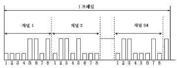
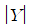
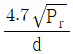
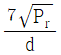
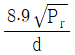
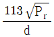
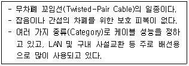
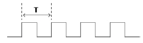
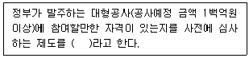
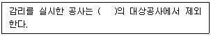

통신설비기능장 (2021-10-02 기출문제)
1과목: 임의 과목 구분(20문항)
1. 다음 중 랜덤 신호에 대한 설명으로 가장 적합한 것은?
- 정현파 발진기에서 발생하는 발진 신호
- 확률, 통계에 의해서만 설명할 수 있는 신호
- 비주기적이며 과도적인 신호
- 함수의 형태로 표현될 수 있는 신호
(정답률: 87%)

2. PCM 24 채널 프레임 동기방식에 의한 타임 슬롯의 1프레임의 비트(bit) 수는?

- 8
- 33
- 192
- 193
(정답률: 90%)
3. 다음과 같은 PCM 특유의 잡음 중 표본화과정에서 얻어진 PAM신호의 순시 진폭값을 설정된 이산적인 신호로 변환시키는 과정에서 발생하는 잡음은?
- 표본화 잡음
- 과부하 잡음
- 양자화 잡음
- 플리커 잡음
(정답률: 90%)
4. 시분할 다중 방식(TDM)에서 아날로그(Analog) 방식이 아닌 것은?
- PAM
- PWM
- PPM
- PCM
(정답률: 85%)
5. 다음 중 반송파의 왕복 통화로를 분리·결합하는 장치는 무엇인가?
- 선로 여파기
- 방향 여파기
- 3권 변성기
- 평형 회로망
(정답률: 87%)
6. PCM 방식에서 정보의 손실없이 재생하기 위하여 표본화 주파수는 신호 주파수의 최소 몇 배 이상 되어야 하는가?
- 1.5배
- 2배
- 3배
- 5배
(정답률: 91%)
7. 시분할 다중화 방식에서 4[kHz]까지의 음성 신호를 재생시키기 위한 표본화 주기는?
- 100[㎲]
- 125[㎲]
- 200[㎲]
- 225[㎲]
(정답률: 88%)
8. 1Frame의 데이터 값이 7[bit], 표본화 주파수 fs가 8[kHz], 신호 Parity bit와 프레임 동기 bit가 각각 1[bit]인 PCM 24ch 시분할다중화기의 전송속도로 적합한 것은?
- 64[kbps]
- 128[kbps]
- 1.544[Mbps]
- 2.048[Mbps]
(정답률: 83%)
9. 다음 중 변조방식과 복조방식의 조합이 잘못된 것은?
- FSK-포락선 검파
- PSK-비동기검파
- QAM-동기검파
- QPSK-동기검파
(정답률: 69%)
10. 정보통신 시스템에서 직렬 전송방식을 채택하는 이유는?
- 근거리 전송에 적합하기 때문이다.
- 오류 검출 및 정정이 쉽기 때문이다.
- 회선의 설치비용이 경제적이기 때문이다.
- 직병렬 변환기가 필요 없으므로 시스템이 간단하기 때문이다.
(정답률: 84%)
11. 다음 중 포스터 실리형과 비교하여 비검파기에 대한 설명으로 틀린 것은?
- 다이오드의 결선 방향이 다르다.
- 출력측에 큰 용량의 콘덴서가 접속되어 있다.
- 검파출력전압은 2배이고 출력전압의 극성은 동일하다.
- 중심점이 접지되어 있다.
(정답률: 63%)
12. 다음 중 정재파비(SWR) = 1일 때의 설명으로 잘못된 것은?
- SWR =1에 가까울수록 이상적이다.
- 진행파와 반사파가 동시에 존재한다.
- 선로의 특성임피던스(ZO)와 부하임피던스(ZR)가 같다.
- 반사계수(

) = 0 이다.
(정답률: 76%)
13. 안테나의 복사저항이 25[Ω]이고 손실저항이 5[Ω]일 때 이 안테나의 복사 효율은 약 얼마인가?
- 16[%]
- 25[%]
- 67[%]
- 83[%]
(정답률: 60%)
14. 다음 중 통신위성에 설치하는 안테나가 아닌 것은?
- 파라볼라 안테나
- 혼 안테나
- 무지향성 안테나
- 루프 안테나
(정답률: 78%)
15. 파라볼라(Parabola) 안테나에 대한 설명으로 잘못된 것은?
- 지향성이 예민하고 이득이 높다.
- 이득은 안테나의 개구면적에 비례한다.
- 비교적 소형이고 구조가 간단하여 제작이 용이하다.
- 부엽(Side Lobe)이 비교적 적고 광대역성이다.
(정답률: 76%)
16. 방사전력이 Pr[W]인 반파장 다이폴 안테나에서 d[m] 떨어진 점의 전계강도[V/m]는?




(정답률: 84%)
17. 위성통신에서 위성추적 방식에 대한 설명으로 옳지 않은 것은?
- 자기추적방식과 프로그램 추적 방식이 있다.
- 모든 궤도에서 주로 이용되는 방식은 자기추적 방식이다.
- 궤도의 데이터를 미리 컴퓨터에 입력하여 위성이 움직이는 방향으로 제어 시스템이 추적해 나가는 방식은 프로그램 추적방식이다.
- 이동국에서 주로 적용되는 방식은 프로그램 추적 방식이다.
(정답률: 70%)
18. 다음 중 위성통신용 지구국 안테나로 가장 널리 사용되는 것은?
- 혼 안테나
- 파라볼라 안테나
- 카세그레인 안테나
- 다이폴 안테나
(정답률: 79%)
19. 안테나의 주요 파라미터로 맞지 않는 것은?
- 방사패턴
- 지향성
- 이득
- 정합
(정답률: 70%)
20. 다음 중 CDMA방식에서의 전력제어의 목적과 거리가 먼 것은?
- 인접 기지국 통화 용량의 최대화
- 균일한 통화품질 유지
- 자기 기지국 통화 용량의 최대화
- 기지국 배터리 수명연장
(정답률: 82%)
2과목: 임의 과목 구분(20문항)
21. OSI 7계층에서 전송매체, 부호화방식, 전송속도를 규정한 계층은?
- 물리 계층
- 데이터링크 계층
- 네트워크 계층
- 트랜스포트 계층
(정답률: 65%)
22. 표준 적용범위에 따른 분류 기준이 다른 것은?
- 국제표준
- 지역표준
- 사실표준
- 단체표준
(정답률: 82%)
23. 회사에서 하루 동안 발생된 전체 호(Call) 수는 120이고, 통화 완료된 호 수가 90이라면 통화완료율은?
- 25[%]
- 50[%]
- 75[%]
- 100[%]
(정답률: 83%)
24. 다음 중 일반적인 TCP/IP 프로토콜의 응용 서비스와 포트번호의 연결이 적합하지 않은 것은?
- HTTP : 80
- DNS : 53
- FTP : 21
- TELNET : 25
(정답률: 80%)
25. RFID 시스템의 논리적 구성은 크게 4개의 계층구조로 설명할 수 있다. 다음 중 맞는 것은?
- 디바이스 계층, 센서 네트워크 계층, 미들웨어 계층, 애플리케이션 계층
- 전송계층, 네트워크 계층, 세션 계층, 애플리케이션 계층
- 디지털 계층, 네트워크 계층, 변복조 계층, 애플리케이션 계층
- 위치인식 계층, 센서 프로그램 계층, 분산제어 계층, 지능형제어 계층
(정답률: 79%)
26. 다음은 BcN(Broadband Convergence Network)의 구성요소와 그 요소의 역할에 대하여 연결해 놓은 것이다. 맞지 않는 것은?
- Access Gateway = 가입자와의 연결
- Trunk Gateway = 타 망(기존망)과의 연결
- Signaling Gateway = 신호 프로토콜의 처리
- Soft switch = 음성통신 중심의 교환
(정답률: 82%)
27. OSI 7계층 참조 모델 중 네트워크를 연결하는데 필요한 데이터 전송과 교환 등 논리적 기능과 관리 규정에 관련이 깊은 계층은?
- 데이터 링크 계층
- 네트워크 계층
- 트랜스포트 계층
- 세션 계층
(정답률: 67%)
28. 다음 중 방화벽의 주요 구성 요소에 속하지 않는 것은?
- 프록시 서버
- 암호 시스템
- 베스천 호스트
- 스크린 아우터
(정답률: 70%)
29. 다음 중 정보보호시스템의 종류로 적합하지 않는 것은?
- 방화벽(Firewall)
- IDS(Intrusion Detection System)
- VPN(Virtual Private Network)
- DoS(Denial of Service)
(정답률: 80%)
30. 다음 중 전자우편을 안전하게 전송할 수 있도록 개발된 End-to-End 방식의 보안 프로토콜로 가장 적합한 것은?
- SSL
- TLS
- S/MIME
- SMTP
(정답률: 76%)
31. 다음 중 동축케이블(Coaxial Cable)에 대한 설명으로 옳은 것은?
- 주파수가 높아지면 표피 효과와 근접 작용의 영향이 감소되어 누화 발생이 쉽다.
- 외부도체는 접지해서 사용하므로 트위스트 페어에 비해 간섭과 누화특성이 좋지 않다.
- 원단누화가 많이 발생하여 누화를 감소시키기 위하여 외부도체를 철 테이프로 감는다.
- 아날로그 신호전송과 디지털 신호전송에 모두 이용할 수 없다.
(정답률: 71%)
32. 다음에서 설명하는 케이블 종류는 무엇인가?

- STP 케이블
- UTP 케이블
- PIC 케이블
- SMF 케이블
(정답률: 86%)
33. 케이블 포설시 허용 장력이 250[kg], 케이블 무게 4[kg], 지하관로의 마찰계수가 0.5일 때 맨홀의 설치 간격은?
- 31.25[m]
- 125[m]
- 500[m]
- 2,000[m]
(정답률: 79%)
34. 광섬유의 클래드 표준직경이 125[㎛], 최대직경이 126[㎛]이고 최소직경이 124[㎛]일 때 이 광섬유의 클래딩 균경률은 약 몇[%] 인가?
- 0.8
- 1.2
- 1.6
- 3.2
(정답률: 57%)
35. 다음 중 광섬유 케이블의 대표적인 가입자 배선방식이 아닌 것은?
- 루프(Loop) 배선법
- 체감 성형(Star) 배선법
- 무체감 성형(Star) 배선법
- 자유 배선법
(정답률: 69%)
36. 다음 중 광통신시스템에 사용되는 수광소자의 조건에 대한 설명으로 틀린 것은?
- 전기신호로부터 광신호로 변환 효율이 높아야 한다.
- 정보신호를 받아들을 수 있는 충분한 대역폭 또는 응답속도가 필요하다.
- 소자에서 생기는 잡음 및 증폭과정에서 잡음이 수반되지 않아야 한다.
- 주위 환경(감도, 주위 온도 등)에 따른 특성변화가 적어야 한다.
(정답률: 62%)
37. 광파이버의 굴절율이 전파하는 광의 파장에 따라 변화함으로써 생기는 분산을 무엇이라 하는가?
- 모드 분산
- 구조 분산
- 재료 분산
- 편광 분산
(정답률: 70%)
38. 어떤 물리량을 측정할 경우 그것과 같은 종류의 어떤 일정량을 기준으로 하여 몇 배가 되는가를 측정하게 되는데 이 비교기준을 무엇이라 하는가?
- 측정
- 오차
- 보정
- 단위
(정답률: 73%)
39. 아래 클럭(Clock) 신호의 주파수가 100[MHz]라고 할 때, 주기(T)는 얼마인가?

- 1[ns]
- 10[ns]
- 100[ns]
- 1[㎲]
(정답률: 79%)
40. 다음 네트워크 분석기 중 진폭과 위상을 모두 측정할 수 있는 측정기는 어느 것인가?
- 스칼라 네트워크 분석기
- 페이즈 네트워크 분석기
- 벡터 네트워크 분석기
- 로직 네트워크 분석기
(정답률: 65%)
3과목: 임의 과목 구분(20문항)
41. 유선 네트워크 환경에서 전송계층(TCP)의 문제를 분석하기 위해 필요한 측정 장비로 가장 적합한 것은?
- 프로토콜 분석기
- 오실로스코프
- 벡터스코프
- 스펙트럼 분석기
(정답률: 73%)
42. 다음 중 스펙트럼분석기의 측정대상으로 적합하지 않은 것은?
- 과도현상 측정
- 고조파 측정
- 잡음전력 측정
- 불요방사파 측정
(정답률: 64%)
43. 다음 중 LTE 서비스를 위한 주파수 대역으로 사용되지 않는 주파수는?
- 900[MHz]
- 1.7[GHz]
- 2.1[GHz]
- 2.4[GHz]
(정답률: 77%)
44. 어떤 SI형 MMF Cable 굴절률을 측정하였더니 Core의 굴절률이 1.4이고 Clading의 굴절률이 1.2라고 하면 이 Cable의 비굴절률 차는 약 얼마인가?
- 13.8[%]
- 14.29[%]
- 6.67[%]
- 17.52[%]
(정답률: 59%)
45. 다음 중 플라스틱 광섬유(POF)에 대한 설명으로 틀린 것은?
- 코어와 클래딩 부분의 재질을 플라스틱 사용한 광섬유이다.
- 유리 광섬유(POF)에 비해 전송특성이 미흡하다.
- 소형, 경량으로 취급이 용이하며 고속 전송이 가능하다.
- 유리 광섬유(POF)보다 전송손실이 작고, 내열성이 더 좋은 장점이 있다.
(정답률: 80%)
46. 다음 중 「방송통신발전 기본법」에서 정하는 용어의 정의로 틀린 것은?
- "방송통신사업자"란 관련법령에 따라 과학기술정보통신부장관 또는 방송통신위원회에 신고·등록·승인·허가 및 이에 준하는 절차를 거쳐 방송통신서비스를 제공하는 자를 말한다.
- "방송통신콘텐츠"란 지상파 텔레비전에서 방송하는 음성 및 영상을 말한다.
- "방송통신설비"란 방송통신을 하기 위한 기계·기구·선로(線路) 또는 그 밖에 방송통신에 필요한 설비를 말한다.
- "방송통신기자재"란 방송통신설비에 사용하는 장치·기기·부품 또는 선조(線條) 등을 말한다.
(정답률: 78%)
47. 다음 중 정보통신공사업법 시행령에서 규정한 공사의 범위로 틀린 것은?
- 수전설비를 포함한 정보통신전용 전기시설설비공사 등 그 밖의 설비공사
- 전기통신관계법령 및 전파관계법령에 따른 통신설비공사
- 「방송법」등 방송관계법령에 따른 방송설비공사
- 정보통신관계법령에 따라 정보통신설비를 이용하여 정보를 제어·저장 및 처리하는 정보설비공사
(정답률: 65%)
48. 전력유도의 전압이 제한치를 초과하거나 초과할 우려가 있는 경우에는 전력유도 방지조치를 하여야 한다. 다음 중 제한치가 잘못된 것은?
- 이상시 유도위험전압 : 650[V]
- 상시 유도위험종전압 : 125[V]
- 기기 오동작 유도종전압 : 15[V]
- 잡음전압 : 0.5[mV]
(정답률: 67%)
49. 다음 중 이용자가 안전하고 신뢰성 있는 방송통신서비스를 제공 받을 수 있도록 기간통신사업자·별정통신사업자 및 부가통신사업자가 구비하여 운용하여야 하는 사항이 아닌 것은?
- 방송통신설비를 수용하기 위한 건축물 또는 구조물의 안전 및 화재대책 등에 관한 사항
- 방송통신설비를 설치하는 자의 안전 확보에 필요한 사항
- 방송통신설비의 운용에 필요한 시험·감시 및 통제를 할 수 있는 기능에 관한 사항
- 방송통신설비의 안전성 및 신뢰성 확보를 위하여 필요한 사항
(정답률: 67%)
50. 통신관련시설의 접지저항은 10[Ω]이하를 기준으로 하는데 다음 중 접지저항을 100[Ω]이하로 할 수 잇는 경우가 아닌 것은?
- 선로설비 중 선조·케이블에 대하여 일정 간격으로 시설하는 접지
- 국선 수용 회선이 200회선 이상인 주배선반
- 보호기를 설치하지 않는 구내통신단자함
- 철탑이외 전주 등에 시설하는 이동통신용 중계기
(정답률: 78%)
51. 다음 문장의 괄호 안에 들어갈 내용으로 가장 적합한 것은?

- 입찰참가자격 사전심사(PQ)
- 임대형 민간투자사업(BTL)
- 수익형 민간투자사업(BTO)
- 턴키 프로젝트(TP) 계약
(정답률: 82%)
52. 다음 중 전주의 안전계수에 영향을 주는 요소가 아닌 것은?
- 인장하중
- 풍압하중
- 기상의 변화
- 접지저항의 크기
(정답률: 62%)
53. 지능형 홈네트워크 설비 설치 및 기술기준에서 “집중구내통신실”의 설치조건으로 틀린 것은?
- 출입장애를 방지하기 위해 입출구를 양방향으로 설치하여야 한다.
- 보안을 위한 잠금장치를 설치하여야 한다.
- 적정온도의 유지를 위한 냉방시설을 설치하여야 한다.
- 냉방기 고장 시 실내온도 상승을 억제하기 위해 흡배기용 환풍기를 설치하여야 한다.
(정답률: 70%)
54. 다음 중 「방송통신설비의 안전성 및 신뢰성에 대한 기술기준」의 설비기준 항목에 해당하지 않는 것은?
- 대체접속계통의 설정
- 우회전송로의 구성
- 회선의 집중 수용
- 전송로설비의 동작 감시
(정답률: 60%)
55. 정보통신공사업법에서 다음 내용의 괄호 안에 가장 알맞은 것은?

- 사용전 검사
- 실시설계
- 분리발주
- 설계변경
(정답률: 71%)
56. 제품의 결함이 작업자의 태만과 부주의에 있다는데 착안하여 제품의 결함을 제거하고자 종업원들의 주의와 연구를 통해 작업상 발생하는 모든 결함을 없애는 운동은?
- ISO 9001
- 6시그마(6 Sigma)
- 무결점 운동(Zero Defects)
- 랜덤 샘플링(Random Sampling)
(정답률: 68%)
57. 지역보전 또는 부문보전과 집중보전을 결합하여 장점을 살리고 결점을 보완하는 보전조직의 형태는?
- 혼합보전
- 예방보전
- 사후보전
- 절충보전
(정답률: 66%)
58. 설비 배치 방식에 대한 일반적 특징으로 가장 적절하지 못한 것은?
- 고정위치 배치는 제품이 커서 이동이 어려운 경우에 적합하다.
- 그룹배치는 제품별 배치와 공정별 배치의 혼합형으로 셀형 배치라고도 한다.
- 제품별 배치는 설비나 작업자에 문제가 생겼을 때 라인전체에 영향을 준다.
- 공정별 배치는 소품종 대량생산인 경우에 가장 적합한 형태이다.
(정답률: 64%)
59. 다음 중 공정분석에 대한 설명으로 알맞지 않은 것은?
- 표준시간을 산출하기 위한 시간측정기법을 연구한다.
- 작업물의 흐름 관점에서 조사 및 분석을 수행한다.
- 공정상의 낭비나 비합리적인 요소를 제거하기 위하여 실시한다.
- 공정도에서는 간단하고 명확한 표현을 위하여 공정기호를 이용한다.
(정답률: 60%)
60. 재고를 '0'으로 하여 재고비용을 최소화하려는 것으로 비용절감, 재고절감, 결함제거 등을 통하여 생산성을 높이기 위해 입하 재료를 재고로 두지 않고 그대로 사용하는 상품관리방식은?
- 로트 생산방식(Lot Production System)
- 셀 생산방식(Cell Production System)
- 적시 생산방식(Just In Time System)
- 도요타 생산방식(Toyota Production System)
(정답률: 80%)